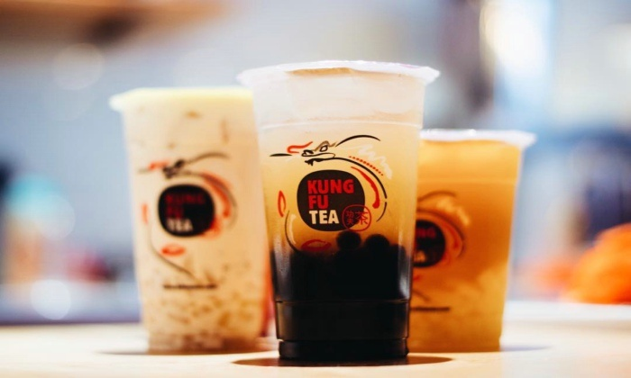
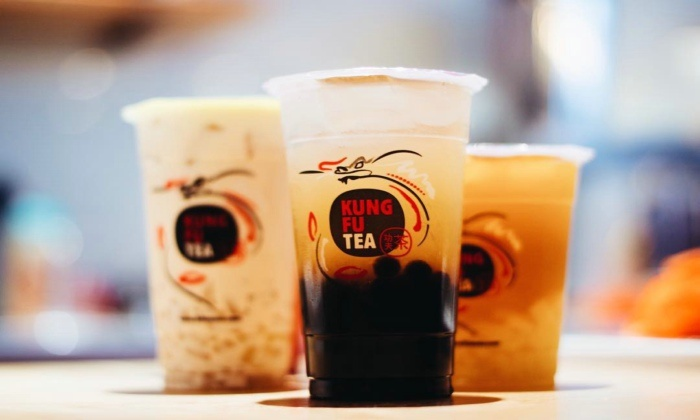
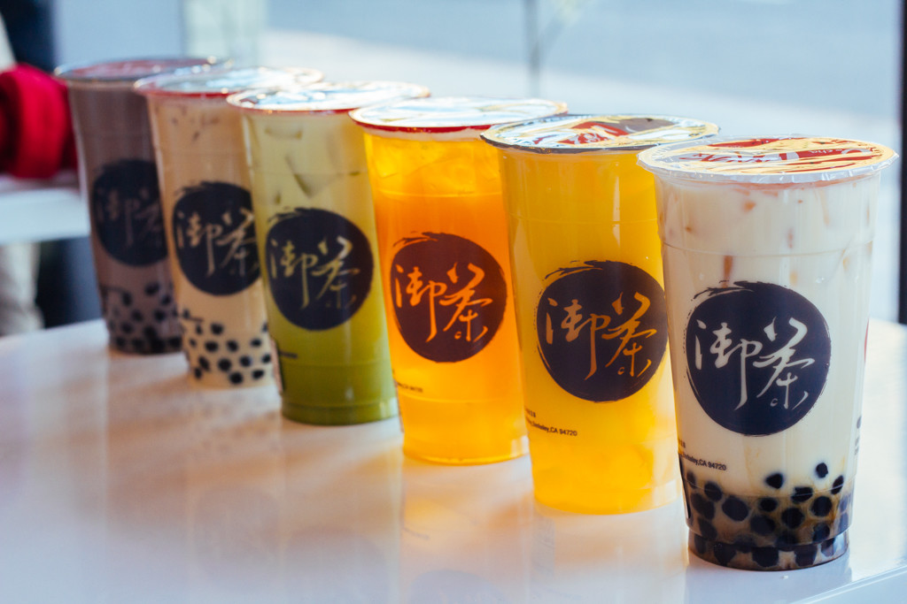
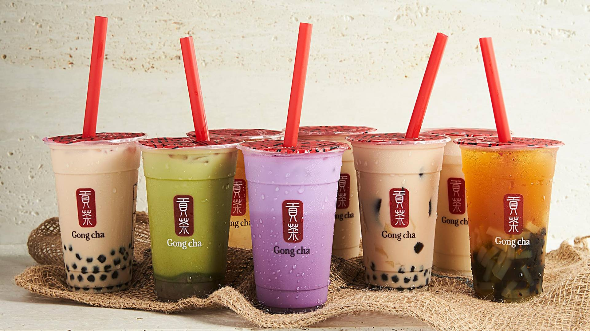
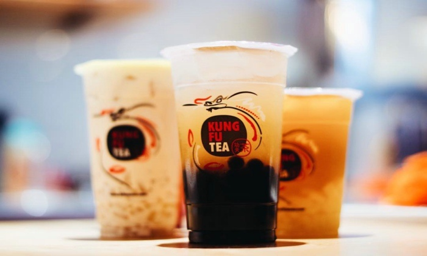
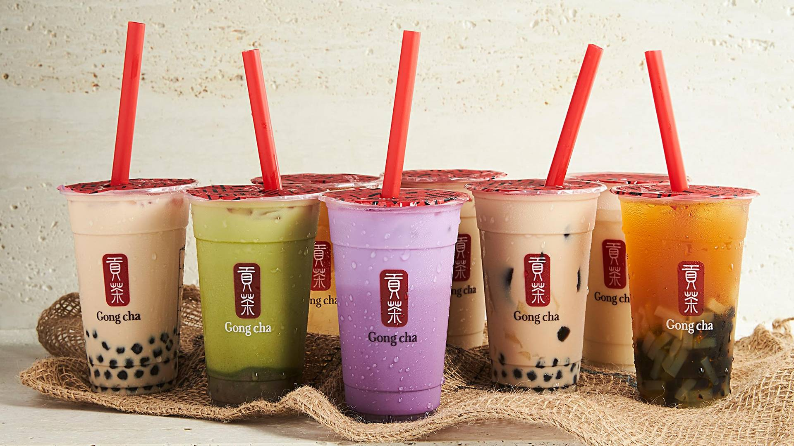
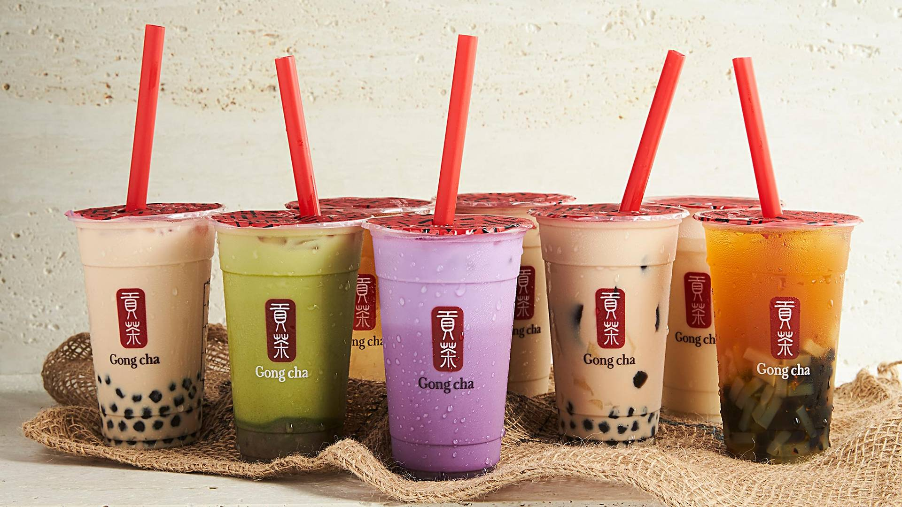
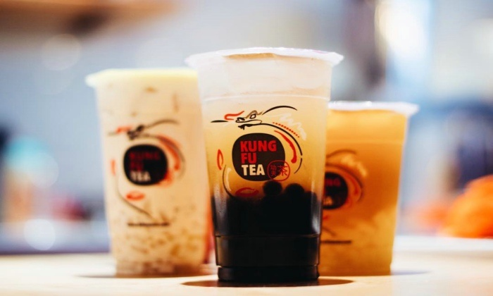
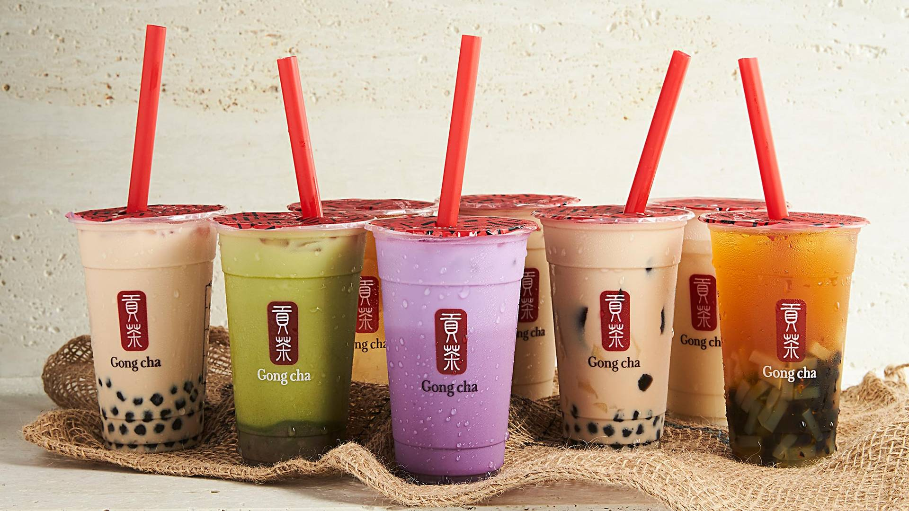

 






Boba Tea or Bubble Tea is a Taiwanese-based dessert drink that comes in different flavors of tea mixed with milk and sweet, chewy tapioca balls called boba. Hence the name, Boba Tea.
Boba first started out as just cold tea infused with fruity flavoring originating from Taiwan. As the technique spread, creativity began to spread as well as topping choices expanded beyond tapioca balls to include elements like grass jelly, almond jelly, egg pudding, and red beans.
Today, the U.S. is populated with an abundance of bubble tea chains selling Boba of all different kinds.
The Classic Milk Tea is the original boba tea drink. It consists of a tea of your choice (usually Black Tea, Oolong Tea, Jasmine Tea, and Green Tea are offered) that is sometimes paired with a fruit flavor such as Strawberry or Peach. As always, you can include boba as well as other toppings such as lychee or aloe bits.
Milk tea is the most popular boba tea. You are given tea flavors (usually Black Tea, Oolong Tea, Jasmine Tea, and Early Gray Tea are offered) to chose from. Milk is then added to the tea along with a topping of your choice (usually honey-coated boba).
Slush Boba is not a tea-based boba but is in fact a smoothie that can have boba and other toppings added to it. They usually come in fruit flavors such as Strawberry, Mango, Coconut, and Lychee.
A few other honorable mentions that don't quite have their own "type" or cateory include boba tea creations using jellies and other Asian toppings. This includes: boba with milkcap or cheesecap (a creamy, sweet foam that is poured on top of the tea-base) and shaved ice cream with condensed milk and jelly toppings and tofu drenched with honey.
It all started with a small tea stand in Taiwan...

Kids would buy tea at tea stands after school. One stand became popular when the owner began to add different fruit flavoring to her teas.
Because the teas she brewed were so sweet and cool, kids would grow attached and keep coming back. Word spread about the woman’s tactic and other stands started to add more flavors to their teas.
The reason why Boba is also called “Bubble tea” originated from the bubbles that would form from mixing the tea and flavoring well so that the flavors can be infused within the drink.
Liu Han-Chieh brought the concept of adding toppings to the drink. Han-Chieh brought tapioca pearls, the black chewy spheres often seen in Boba, to Taiwan.
Soon enough, pearls were mixed in with the cold, flavored teas and a new trend was starting to pick up. Because the pearls also looked like bubbles, the name “Bubble tea” was justified even further.
Boba came to the U.S. along with the immigration of Taiwanese people and booming cafe culture due to shops like Starbucks.
In the early 1990s, before specialty boba shops emerged, boba tea could be found in places like Los Angeles in a Styrofoam cup as sweet tea mixed with creamer with a small serving of tapioca pearls. Boba could only be found in Taiwanese restaurants at that time.
The trend cooled down in the early 2000s but picked back up again when boba chains such as Boba Guys, Ten Ren, and Quickly opened up.
These chains, owned by immigrants of Taiwanese descent, started selling high-quality teas with milk in a casual and cozy atmosphere beckoning people to come back.
Boba is a nationwide phenomenon. It continues to gain more popularity due to the expansion of new boba chains such as Kung Fu Tea and Sharetea as well as being a growing symbol of community amongst Asian-Americans.
In a society where the younger generation is becoming more expressive and voiceful, having an entity that ties back to Asian roots while being the new fad deems inevitable for Boba's growing popularity.


{kind=link}